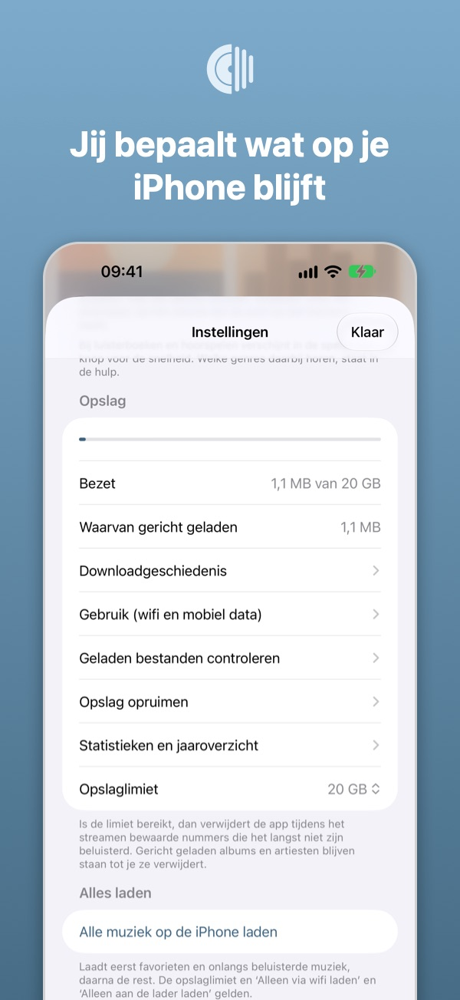
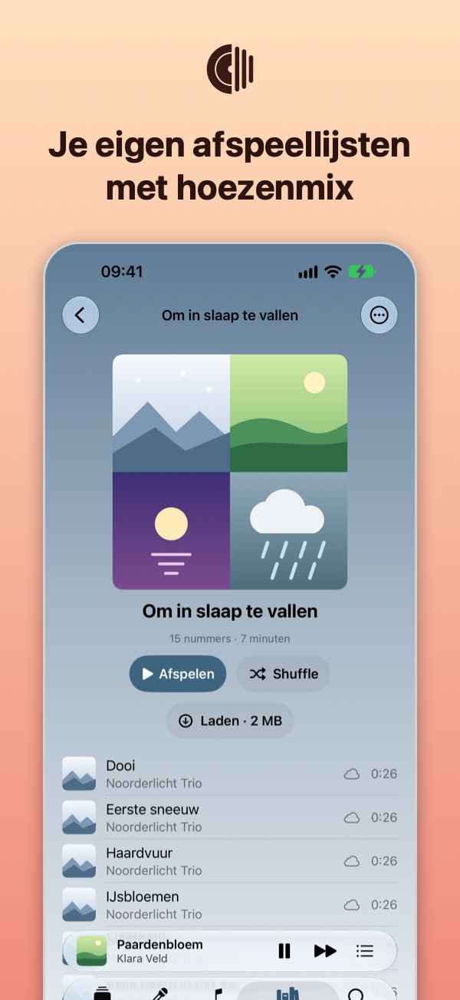
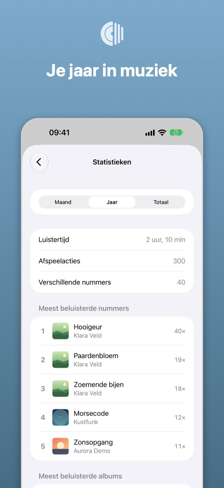
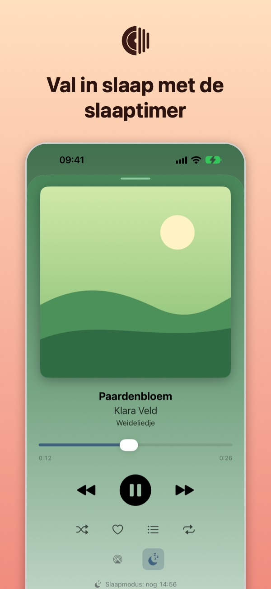
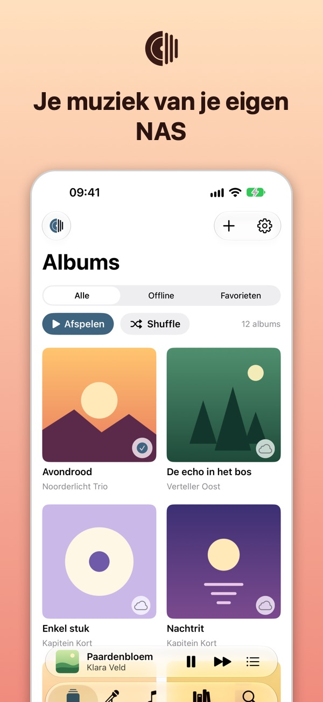
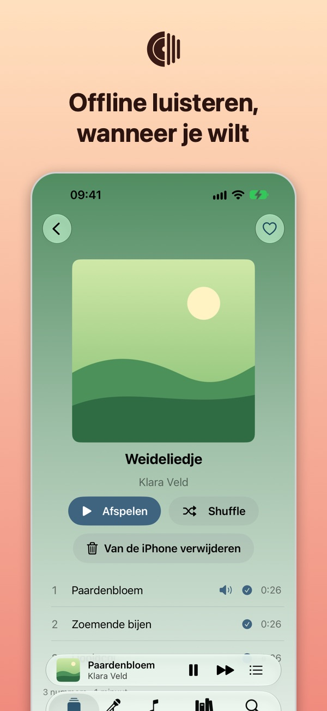
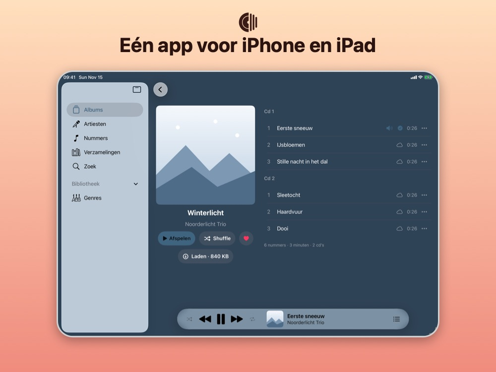
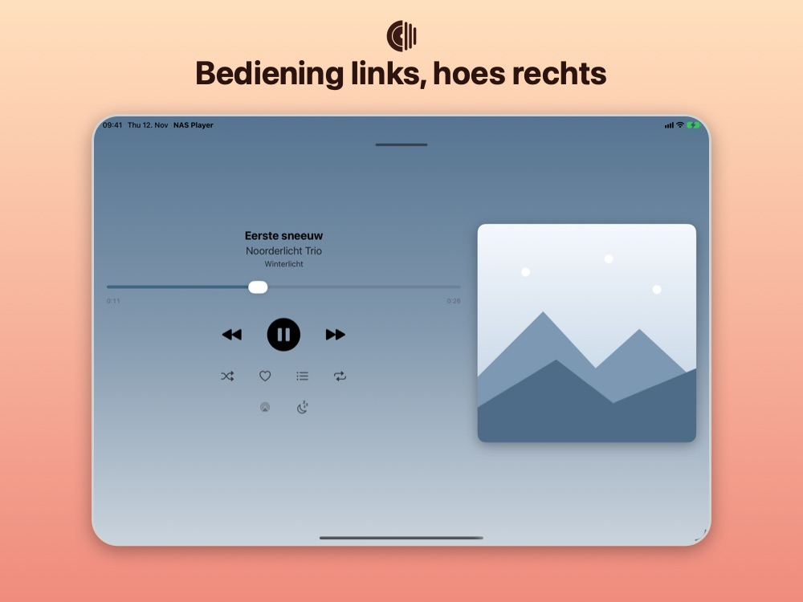
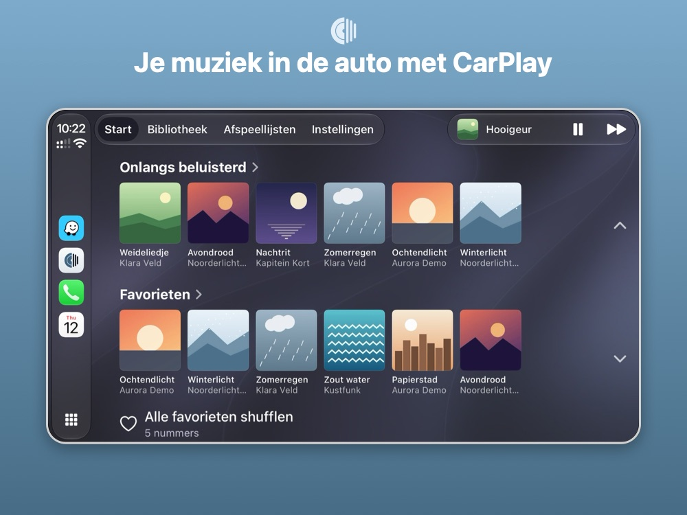

IPHONE
Je hele bibliotheek op zak
Albumoverzicht, offline downloads, opslag, afspeellijsten, statistieken en slaaptimer op de iPhone.




Speelt de muziek van je Synology-NAS (Audio Station) af op iPhone en iPad: streamen, offline luisteren, CarPlay en Siri. Gratis, zonder reclame, zonder tracking.
 Gratis · geen in-app-aankopen
Gratis · geen in-app-aankopen


Op de iPhone, op de iPad en in de auto: dezelfde bibliotheek, dezelfde favorieten, dezelfde muziek.
Albumoverzicht, offline downloads, opslag, afspeellijsten, statistieken en slaaptimer op de iPhone.




Eén app voor iPhone en iPad: zijbalk, albumpagina in twee kolommen en een speler met de bediening links en de hoes rechts.


Kies uit Start, Bibliotheek, afspeellijsten en genres direct in de auto.

In je thuisnetwerk vindt de app je NAS zelf. Onderweg gebruik je een https-adres.
Laad albums en artiesten gericht op je apparaat. Downloads lopen door op de achtergrond.
Thuis, onderweg of zonder netwerk: geladen muziek speelt overal, de rest streamt van je NAS. In de auto kies je met CarPlay direct op het scherm.
Een Synology-NAS met Audio Station die bereikbaar is via een https-adres met een geldig certificaat. Zonder NAS kun je de app proberen in de demomodus.